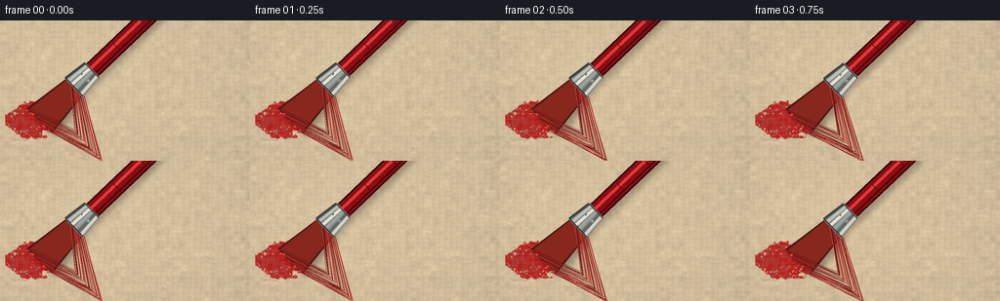
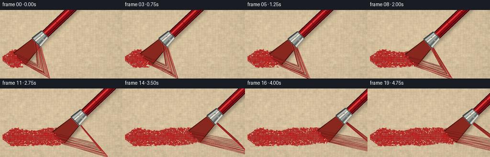
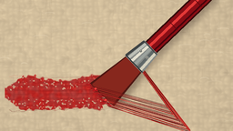
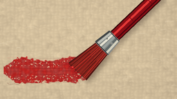

CODING AGENTS AS PIXEL WORLD MODELS
traex/GPT-5.6-Sol · mechanics_0046
点击播放 · 原生 RGB 像素
逐轮保存的候选
回放视频、检查图与代码变化。
每份候选均可单独播放。实际图片检查记录在下方工具轨迹中。
候选 01播放与检查图
点击播放 · 原生 RGB 像素


展开代码变化
--- 上一保存版本
+++ 本次保存版本
@@ -0,0 +1,223 @@
+from pathlib import Path
+import math
+import numpy as np
+from PIL import Image, ImageDraw, ImageFilter
+import artifact_io
+
+# Procedural macro shot of a paintbrush working wet red paint into coarse canvas.
+W, H, N = 256, 144, 20
+S = 3
+WW, HH = W*S, H*S
+rng = np.random.default_rng(4601)
+
+# Stable, spatially coherent canvas and paint texture.
+def smooth_noise(width, height, gridx, gridy, seed):
+ rr = np.random.default_rng(seed)
+ a = rr.normal(0, 1, (gridy, gridx)).astype(np.float32)
+ lo = Image.fromarray(a, mode='F')
+ hi = lo.resize((width, height), Image.Resampling.BICUBIC)
+ return np.asarray(hi, dtype=np.float32)
+
+Y, X = np.mgrid[0:HH, 0:WW]
+xf, yf = X/S, Y/S
+noise_fine = rng.normal(0, 1, (HH, WW)).astype(np.float32)
+noise_mid = smooth_noise(WW, HH, 50, 28, 905)
+noise_large = smooth_noise(WW, HH, 10, 7, 202)
+# Crosshatched woven relief, deliberately somewhat irregular.
+warp_x = 1.2*noise_mid
+warp_y = 1.2*smooth_noise(WW, HH, 42, 25, 707)
+vertical = np.cos(2*np.pi*(xf + warp_x)/5.8)
+horizontal = np.cos(2*np.pi*(yf + warp_y)/5.1)
+thread_relief = 2.8*vertical + 2.5*horizontal + 1.5*vertical*horizontal
+light = 4.5*(1-xf/W) + 3.0*(1-yf/H)
+vignette = -11*((xf-W/2)/(W*.75))**2 - 8*((yf-H/2)/(H*.78))**2
+base_luma = thread_relief + light + vignette + 4.0*noise_mid + 1.1*noise_fine
+base = np.empty((HH, WW, 3), np.float32)
+base[...,0] = 206 + base_luma
+base[...,1] = 190 + base_luma*.94
+base[...,2] = 160 + base_luma*.76
+base = np.clip(base,0,255).astype(np.uint8)
+
+# Fine fibers permanently printed into the canvas.
+canvas_img = Image.fromarray(base, 'RGB')
+d = ImageDraw.Draw(canvas_img, 'RGBA')
+rr = np.random.default_rng(41)
+for _ in range(420):
+ x = float(rr.uniform(-5, W+5)); y = float(rr.uniform(-3, H+3))
+ if rr.random() < .53:
+ length = rr.uniform(3, 13); dx,dy = length, rr.normal(0, .45)
+ else:
+ length = rr.uniform(2, 10); dx,dy = rr.normal(0,.5), length
+ col = (245,235,210,int(rr.uniform(18,52))) if rr.random()<.52 else (96,78,57,int(rr.uniform(12,34)))
+ d.line([(x*S,y*S),((x+dx)*S,(y+dy)*S)], fill=col, width=max(1,int(rr.uniform(.25,.65)*S)))
+# A few loose fibers which catch the raking light.
+for _ in range(55):
+ x=float(rr.uniform(0,W)); y=float(rr.uniform(0,H)); ln=float(rr.uniform(5,18))
+ d.arc([(x-ln/2)*S,(y-1.5)*S,(x+ln/2)*S,(y+2.5)*S], 185, 350,
+ fill=(245,235,210,int(rr.uniform(25,65))), width=1*S)
+canvas_arr = np.asarray(canvas_img).copy()
+
+# Fixed paint variation maps so deposited paint does not shimmer over time.
+pnoise = smooth_noise(WW, HH, 65, 35, 444)
+pfine = smooth_noise(WW, HH, 180, 90, 445)
+edge_noise = smooth_noise(WW, HH, 95, 50, 446)
+
+def poly(draw, pts, fill):
+ draw.polygon([(int(x*S),int(y*S)) for x,y in pts], fill=fill)
+def line(draw, pts, fill, width):
+ draw.line([(int(x*S),int(y*S)) for x,y in pts], fill=fill, width=max(1,int(width*S)), joint='curve')
+def ell(draw, box, fill, outline=None, width=1):
+ box2=tuple(int(v*S) for v in box)
+ draw.ellipse(box2, fill=fill, outline=outline, width=max(1,int(width*S)))
+
+def vecpt(p, u, a, n=(0,0), b=0):
+ return (p[0]+u[0]*a+n[0]*b, p[1]+u[1]*a+n[1]*b)
+
+def add_paint(im, front, cy, frame):
+ arr=np.asarray(im).astype(np.float32)
+ center = 101.5 + 2.0*np.sin((xf-7)/31.0) + 0.8*np.sin(xf/8.5)
+ half = 17.8 + 1.5*np.sin(xf/15.0) + 1.1*edge_noise
+ taper = np.clip((xf-7)/18,0,1)
+ half *= (.35 + .65*taper)
+ # Ragged front and irregular borders; the fresh paint sits just under the tips.
+ fboundary = front + 2.8*edge_noise + 1.2*np.sin(yf*.52)
+ dist=np.abs(yf-center)
+ mask=(xf>5)&(xf<fboundary)&(dist<half)
+ edgealpha=np.clip((half-dist)*.72,0,1)
+ frontalpha=np.clip((fboundary-xf)*.75,0,1)
+ alpha=(mask*edgealpha*frontalpha).astype(np.float32)
+ # Sparse pinholes retain the canvas tooth, especially at the feathered edges.
+ pores = (pfine > 0.88 + .018*(half-dist)) & (dist>half*.35)
+ alpha[pores] *= .20
+ ridges = np.clip(.6 + .12*pnoise + .06*pfine + .10*np.cos(yf*1.3 + xf*.08), .38, .88)
+ red=np.empty_like(arr)
+ red[...,0]=151 + 24*ridges + 5*pnoise
+ red[...,1]=17 + 10*ridges + 2*pnoise
+ red[...,2]=20 + 8*ridges
+ # Directional wet sheen catches on raised canvas threads.
+ sheen=np.clip(vertical*.55+horizontal*.40+.12,0,1) * 20
+ red[...,0]+=sheen; red[...,1]+=sheen*.48; red[...,2]+=sheen*.40
+ aa=(alpha*(.87+.08*np.clip(pnoise,-1,1)))[...,None]
+ arr=arr*(1-aa)+red*aa
+ out=Image.fromarray(np.clip(arr,0,255).astype(np.uint8),'RGB')
+ pd=ImageDraw.Draw(out,'RGBA')
+ # Long bristle grooves and wet beadlets in the deposited paint.
+ for j in range(23):
+ yy=cy-16+j*1.45+1.1*math.sin(j*2.1)
+ start=12+((j*13)%19)
+ end=front-4-(j%5)*1.2
+ if end>start:
+ if j%3==0:
+ line(pd,[(start,yy),(end,yy+1.0*math.sin(end/24+j))],(82,5,12,55),.45)
+ elif j%3==1:
+ line(pd,[(start,yy),(end,yy+.6)],(255,105,100,42),.38)
+ # Wet ridges at the uneven upper/lower stroke edges.
+ pts_top=[]; pts_bot=[]
+ for x in np.linspace(10,front-3,max(2,int(front/3))):
+ cc=101.5+2*math.sin((x-7)/31)+.8*math.sin(x/8.5)
+ hw=17.8+1.5*math.sin(x/15)
+ pts_top.append((x,cc-hw+.8*math.sin(x*.7)))
+ pts_bot.append((x,cc+hw+.7*math.sin(x*.55)))
+ if len(pts_top)>1:
+ line(pd,pts_top,(255,93,85,68),.55)
+ line(pd,pts_bot,(80,4,10,65),.75)
+ # Tiny blobs where the loaded bristles are actively pressing.
+ for k in range(7):
+ ang=k*2.2+frame*.3
+ x=front-3+math.sin(ang)*3; y=cy+(k-3)*3.7
+ ell(pd,(x-1.5,y-.75,x+1.7,y+.8),(176,20,26,160))
+ return out
+
+def draw_brush(im, tip, phase, speed):
+ # Brush axis points from the touching hairs toward the handle.
+ u=(.721,-.693); n=(.693,.721)
+ B=vecpt(tip,u,47)
+ F=vecpt(B,u,24)
+ E=vecpt(F,u,93)
+ # soft cast shadow directly on rough canvas
+ shadow=Image.new('RGBA',(WW,HH),(0,0,0,0)); sd=ImageDraw.Draw(shadow,'RGBA')
+ shoff=(3.0,4.0)
+ def sh(p): return ((p[0]+shoff[0])*S,(p[1]+shoff[1])*S)
+ brpoly=[vecpt(B,u,0,n,-13),vecpt(B,u,0,n,13),vecpt(tip,u,-2,n,18),vecpt(tip,u,-4,n,-18)]
+ sd.polygon([sh(p) for p in brpoly],fill=(42,20,14,88))
+ sd.line([sh(B),sh(E)],fill=(35,20,16,75),width=19*S)
+ shadow=shadow.filter(ImageFilter.GaussianBlur(3.0*S))
+ im=Image.alpha_composite(im.convert('RGBA'),shadow)
+ dr=ImageDraw.Draw(im,'RGBA')
+ # lacquered handle behind the ferrule: dark rim, red body, narrow specular stripe
+ line(dr,[vecpt(F,u,-1),E],(50,7,10,255),18)
+ line(dr,[F,E],(137,15,22,255),15)
+ line(dr,[vecpt(F,(0,0),0,n,-2.3),vecpt(E,(0,0),0,n,-2.3)],(224,58,57,160),3.0)
+ line(dr,[vecpt(F,(0,0),0,n,4.5),vecpt(E,(0,0),0,n,4.5)],(70,5,13,150),2.3)
+ # subtle bands in varnish
+ for a in [35,72]:
+ p=vecpt(F,u,a)
+ line(dr,[vecpt(p,(0,0),0,n,-6),vecpt(p,(0,0),0,n,6)],(89,8,14,65),.7)
+ # Under-mass of paint-loaded natural bristles, splayed by pressure.
+ corners=[vecpt(B,(0,0),0,n,-12.0),vecpt(B,(0,0),0,n,12.0),
+ vecpt(tip,u,-2.5,n,18.2),vecpt(tip,u,-3.8,n,-18.2)]
+ poly(dr,corners,(78,24,19,255))
+ inner=[vecpt(B,u,1,n,-10.7),vecpt(B,u,1,n,10.7),
+ vecpt(tip,u,-2.2,n,15.8),vecpt(tip,u,-3.0,n,-15.8)]
+ poly(dr,inner,(133,40,30,255))
+ # Individual flexible hairs. Endpoints flare and lag left while dragged right.
+ hr=np.random.default_rng(815)
+ for j in range(39):
+ q=-1+2*j/38
+ jitter=hr.normal(0,.75)
+ start=vecpt(B,u,2+hr.uniform(-1,1),n,q*10.5)
+ # Faster middle of stroke bends the tips backward more.
+ lag=2.3+2.0*speed+1.2*(1-q*q)
+ end=vecpt(tip,u,-lag+hr.uniform(-1.4,1.0),n,q*17.0+jitter+1.0*math.sin(phase+j*.73))
+ mid=vecpt(start,u,-25,n,(q*4.3)+.8*math.sin(phase+j*.43))
+ mid2=((mid[0]+end[0])*.52+start[0]*.48,(mid[1]+end[1])*.52+start[1]*.48)
+ # deep red paint alternates with dark bristle separations
+ colors=[(71,17,15,220),(112,27,23,255),(169,34,33,255),(200,47,42,245),(91,22,18,255)]
+ col=colors[j%len(colors)]
+ line(dr,[start,mid2,end],col,.55+(j%4==1)*.35)
+ if j%7==2:
+ line(dr,[start,mid2],(244,111,90,105),.34)
+ # paint accumulating along contacting tips
+ for j in range(11):
+ q=-1+2*j/10
+ p=vecpt(tip,u,-4.0-1.1*math.sin(j*1.8),n,q*16.4)
+ line(dr,[p,(p[0]-3.8-speed*1.2,p[1]+.4*math.sin(j))],(174,24,29,245),1.0 if j%3 else 1.5)
+ if j in (2,7): ell(dr,(p[0]-1.0,p[1]-.8,p[0]+1.2,p[1]+1.2),(238,63,59,210))
+ # Steel ferrule overlays bristle roots.
+ ferr=[vecpt(B,u,-2,n,-13.5),vecpt(B,u,-2,n,13.5),vecpt(F,u,1,n,10.5),vecpt(F,u,1,n,-10.5)]
+ poly(dr,ferr,(132,139,139,255))
+ # longitudinal metal bands/highlights
+ bands=[(-1.0,-13.0,(63,69,71,240)),(-.72,-9,(186,192,188,255)),(-.28,-4,(226,226,215,255)),
+ (.18,1,(154,163,162,255)),(.58,6,(94,104,106,255)),(.91,10,(211,211,197,255))]
+ for _,off,col in bands:
+ w=3.2
+ p1=vecpt(B,u,-1,n,off); p2=vecpt(F,u,0,n,off*.78)
+ line(dr,[p1,p2],col,w)
+ line(dr,[vecpt(B,u,-1,n,-13),vecpt(B,u,-1,n,13)],(48,51,53,245),1.1)
+ line(dr,[vecpt(F,u,0,n,-10),vecpt(F,u,0,n,10)],(66,68,68,235),1.0)
+ # two fastening rivets
+ for off in (-5.0,5.0):
+ p=vecpt(B,u,14,n,off)
+ ell(dr,(p[0]-1.45,p[1]-1.45,p[0]+1.45,p[1]+1.45),(89,95,96,255),(225,225,214,220),.45)
+ ell(dr,(p[0]-.45,p[1]-.6,p[0]+.35,p[1]+.2),(234,235,224,180))
+ return im.convert('RGB')
+
+frames=[]
+for i in range(N):
+ t=i/(N-1)
+ # Smooth deliberate working stroke with a tiny hand-induced vertical wobble.
+ ease=t*t*(3-2*t)
+ cx=43+132*ease
+ cy=100.5+2.0*math.sin(t*math.pi*1.65)-.8*math.sin(t*math.pi*3.2)
+ speed=6*t*(1-t) # normalized high in the middle, 0 at endpoints
+ frame=Image.fromarray(canvas_arr.copy(),'RGB')
+ frame=add_paint(frame,cx+3.5,cy,i)
+ frame=draw_brush(frame,(cx,cy),t*5.2,speed)
+ # very subtle warm macro-camera grade
+ a=np.asarray(frame.resize((W,H),Image.Resampling.LANCZOS)).astype(np.float32)
+ a[...,0]*=1.018; a[...,1]*=.997; a[...,2]*=.972
+ frames.append(np.clip(a,0,255).astype(np.uint8))
+
+frames=np.stack(frames,axis=0)
+artifact_io.save(frames, Path(__file__).resolve().parent)
+print('saved',frames.shape,frames.dtype)
候选 02播放与检查图
点击播放 · 原生 RGB 像素

展开代码变化
--- 上一保存版本
+++ 本次保存版本
@@ -170,7 +170,7 @@
lag=2.3+2.0*speed+1.2*(1-q*q)
end=vecpt(tip,u,-lag+hr.uniform(-1.4,1.0),n,q*17.0+jitter+1.0*math.sin(phase+j*.73))
mid=vecpt(start,u,-25,n,(q*4.3)+.8*math.sin(phase+j*.43))
- mid2=((mid[0]+end[0])*.52+start[0]*.48,(mid[1]+end[1])*.52+start[1]*.48)
+ mid2=((mid[0]+end[0])*.26+start[0]*.48,(mid[1]+end[1])*.26+start[1]*.48)
# deep red paint alternates with dark bristle separations
colors=[(71,17,15,220),(112,27,23,255),(169,34,33,255),(200,47,42,245),(91,22,18,255)]
col=colors[j%len(colors)]
候选 03播放与检查图
可观测工具轨迹
实际执行的命令与返回图片。
命令 1exit 0
/bin/bash -lc "cat prompt.txt && printf '\\n---RULES---\\n' && cat GENERATION_RULES.md && printf '\\n---SPEC---\\n' && cat task_spec.json"
命令 2exit 0
/bin/bash -lc "find . -maxdepth 2 -type f -printf '%p\\n' | sort | head -200"
命令 3exit 0
/bin/bash -lc 'cat artifact_io.py'
命令 4exit 0
/bin/bash -lc "cat > generate.py <<'PY'
from pathlib import Path
import math
import numpy as np
from PIL import Image, ImageDraw, ImageFilter
import artifact_io
# Procedural macro shot of a paintbrush working wet red paint into coarse canvas.
W, H, N = 256, 144, 20
S = 3
WW, HH = W*S, H*S
rng = np.random.default_rng(4601)
# Stable, spatially coherent canvas and paint texture.
def smooth_noise(width, height, gridx, gridy, seed):
rr = np.random.default_rng(seed)
a = rr.normal(0, 1, (gridy, gridx)).astype(np.float32)
lo = Image.fromarray(a, mode='F')
hi = lo.resize((width, height), Image.Resampling.BICUBIC)
return np.asarray(hi, dtype=np.float32)
Y, X = np.mgrid[0:HH, 0:WW]
xf, yf = X/S, Y/S
noise_fine = rng.normal(0, 1, (HH, WW)).astype(np.float32)
noise_mid = smooth_noise(WW, HH, 50, 28, 905)
noise_large = smooth_noise(WW, HH, 10, 7, 202)
# Crosshatched woven relief, deliberately somewhat irregular.
warp_x = 1.2*noise_mid
warp_y = 1.2*smooth_noise(WW, HH, 42, 25, 707)
vertical = np.cos(2*np.pi*(xf + warp_x)/5.8)
horizontal = np.cos(2*np.pi*(yf + warp_y)/5.1)
thread_relief = 2.8*vertical + 2.5*horizontal + 1.5*vertical*horizontal
light = 4.5*(1-xf/W) + 3.0*(1-yf/H)
vignette = -11*((xf-W/2)/(W*.75))**2 - 8*((yf-H/2)/(H*.78))**2
base_luma = thread_relief + light + vignette + 4.0*noise_mid + 1.1*noise_fine
base = np.empty((HH, WW, 3), np.float32)
base[...,0] = 206 + base_luma
base[...,1] = 190 + base_luma*.94
base[...,2] = 160 + base_luma*.76
base = np.clip(base,0,255).astype(np.uint8)
# Fine fibers permanently printed into the canvas.
canvas_img = Image.fromarray(base, 'RGB')
d = ImageDraw.Draw(canvas_img, 'RGBA')
rr = np.random.default_rng(41)
for _ in range(420):
x = float(rr.uniform(-5, W+5)); y = float(rr.uniform(-3, H+3))
if rr.random() < .53:
length = rr.uniform(3, 13); dx,dy = length, rr.normal(0, .45)
else:
length = rr.uniform(2, 10); dx,dy = rr.normal(0,.5), length
col = (245,235,210,int(rr.uniform(18,52))) if rr.random()<.52 else (96,78,57,int(rr.uniform(12,34)))
d.line([(x*S,y*S),((x+dx)*S,(y+dy)*S)], fill=col, width=max(1,int(rr.uniform(.25,.65)*S)))
# A few loose fibers which catch the raking light.
for _ in range(55):
x=float(rr.uniform(0,W)); y=float(rr.uniform(0,H)); ln=float(rr.uniform(5,18))
d.arc([(x-ln/2)*S,(y-1.5)*S,(x+ln/2)*S,(y+2.5)*S], 185, 350,
fill=(245,235,210,int(rr.uniform(25,65))), width=1*S)
canvas_arr = np.asarray(canvas_img).copy()
# Fixed paint variation maps so deposited paint does not shimmer over time.
pnoise = smooth_noise(WW, HH, 65, 35, 444)
pfine = smooth_noise(WW, HH, 180, 90, 445)
edge_noise = smooth_noise(WW, HH, 95, 50, 446)
def poly(draw, pts, fill):
draw.polygon([(int(x*S),int(y*S)) for x,y in pts], fill=fill)
def line(draw, pts, fill, width):
draw.line([(int(x*S),int(y*S)) for x,y in pts], fill=fill, width=max(1,int(width*S)), joint='curve')
def ell(draw, box, fill, outline=None, width=1):
box2=tuple(int(v*S) for v in box)
draw.ellipse(box2, fill=fill, outline=outline, width=max(1,int(width*S)))
def vecpt(p, u, a, n=(0,0), b=0):
return (p[0]+u[0]*a+n[0]*b, p[1]+u[1]*a+n[1]*b)
def add_paint(im, front, cy, frame):
arr=np.asarray(im).astype(np.float32)
center = 101.5 + 2.0*np.sin((xf-7)/31.0) + 0.8*np.sin(xf/8.5)
half = 17.8 + 1.5*np.sin(xf/15.0) + 1.1*edge_noise
taper = np.clip((xf-7)/18,0,1)
half *= (.35 + .65*taper)
# Ragged front and irregular borders; the fresh paint sits just under the tips.
fboundary = front + 2.8*edge_noise + 1.2*np.sin(yf*.52)
dist=np.abs(yf-center)
mask=(xf>5)&(xf<fboundary)&(dist<half)
edgealpha=np.clip((half-dist)*.72,0,1)
frontalpha=np.clip((fboundary-xf)*.75,0,1)
alpha=(mask*edgealpha*frontalpha).astype(np.float32)
# Sparse pinholes retain the canvas tooth, especially at the feathered edges.
pores = (pfine > 0.88 + .018*(half-dist)) & (dist>half*.35)
alpha[pores] *= .20
ridges = np.clip(.6 + .12*pnoise + .06*pfine + .10*np.cos(yf*1.3 + xf*.08), .38, .88)
red=np.empty_like(arr)
red[...,0]=151 + 24*ridges + 5*pnoise
red[...,1]=17 + 10*ridges + 2*pnoise
red[...,2]=20 + 8*ridges
# Directional wet sheen catches on raised canvas threads.
sheen=np.clip(vertical*.55+horizontal*.40+.12,0,1) * 20
red[...,0]+=sheen; red[...,1]+=sheen*.48; red[...,2]+=sheen*.40
aa=(alpha*(.87+.08*np.clip(pnoise,-1,1)))[...,None]
arr=arr*(1-aa)+red*aa
out=Image.fromarray(np.clip(arr,0,255).astype(np.uint8),'RGB')
pd=ImageDraw.Draw(out,'RGBA')
# Long bristle grooves and wet beadlets in the deposited paint.
for j in range(23):
yy=cy-16+j*1.45+1.1*math.sin(j*2.1)
start=12+((j*13)%19)
end=front-4-(j%5)*1.2
if end>start:
if j%3==0:
line(pd,[(start,yy),(end,yy+1.0*math.sin(end/24+j))],(82,5,12,55),.45)
elif j%3==1:
line(pd,[(start,yy),(end,yy+.6)],(255,105,100,42),.38)
# Wet ridges at the uneven upper/lower stroke edges.
pts_top=[]; pts_bot=[]
for x in np.linspace(10,front-3,max(2,int(front/3))):
cc=101.5+2*math.sin((x-7)/31)+.8*math.sin(x/8.5)
hw=17.8+1.5*math.sin(x/15)
pts_top.append((x,cc-hw+.8*math.sin(x*.7)))
pts_bot.append((x,cc+hw+.7*math.sin(x*.55)))
if len(pts_top)>1:
line(pd,pts_top,(255,93,85,68),.55)
line(pd,pts_bot,(80,4,10,65),.75)
# Tiny blobs where the loaded bristles are actively pressing.
for k in range(7):
ang=k*2.2+frame*.3
x=front-3+math.sin(ang)*3; y=cy+(k-3)*3.7
ell(pd,(x-1.5,y-.75,x+1.7,y+.8),(176,20,26,160))
return out
def draw_brush(im, tip, phase, speed):
# Brush axis points from the touching hairs toward the handle.
u=(.721,-.693); n=(.693,.721)
B=vecpt(tip,u,47)
F=vecpt(B,u,24)
E=vecpt(F,u,93)
# soft cast shadow directly on rough canvas
shadow=Image.new('RGBA',(WW,HH),(0,0,0,0)); sd=ImageDraw.Draw(shadow,'RGBA')
shoff=(3.0,4.0)
def sh(p): return ((p[0]+shoff[0])*S,(p[1]+shoff[1])*S)
brpoly=[vecpt(B,u,0,n,-13),vecpt(B,u,0,n,13),vecpt(tip,u,-2,n,18),vecpt(tip,u,-4,n,-18)]
sd.polygon([sh(p) for p in brpoly],fill=(42,20,14,88))
sd.line([sh(B),sh(E)],fill=(35,20,16,75),width=19*S)
shadow=shadow.filter(ImageFilter.GaussianBlur(3.0*S))
im=Image.alpha_composite(im.convert('RGBA'),shadow)
dr=ImageDraw.Draw(im,'RGBA')
# lacquered handle behind the ferrule: dark rim, red body, narrow specular stripe
line(dr,[vecpt(F,u,-1),E],(50,7,10,255),18)
line(dr,[F,E],(137,15,22,255),15)
line(dr,[vecpt(F,(0,0),0,n,-2.3),vecpt(E,(0,0),0,n,-2.3)],(224,58,57,160),3.0)
line(dr,[vecpt(F,(0,0),0,n,4.5),vecpt(E,(0,0),0,n,4.5)],(70,5,13,150),2.3)
# subtle bands in varnish
for a in [35,72]:
p=vecpt(F,u,a)
line(dr,[vecpt(p,(0,0),0,n,-6),vecpt(p,(0,0),0,n,6)],(89,8,14,65),.7)
# Under-mass of paint-loaded natural bristles, splayed by pressure.
corners=[vecpt(B,(0,0),0,n,-12.0),vecpt(B,(0,0),0,n,12.0),
vecpt(tip,u,-2.5,n,18.2),vecpt(tip,u,-3.8,n,-18.2)]
poly(dr,corners,(78,24,19,255))
inner=[vecpt(B,u,1,n,-10.7),vecpt(B,u,1,n,10.7),
vecpt(tip,u,-2.2,n,15.8),vecpt(tip,u,-3.0,n,-15.8)]
poly(dr,inner,(133,40,30,255))
# Individual flexible hairs. Endpoints flare and lag left while dragged right.
hr=np.random.default_rng(815)
for j in range(39):
q=-1+2*j/38
jitter=hr.normal(0,.75)
start=vecpt(B,u,2+hr.uniform(-1,1),n,q*10.5)
# Faster middle of stroke bends the tips backward more.
lag=2.3+2.0*speed+1.2*(1-q*q)
end=vecpt(tip,u,-lag+hr.uniform(-1.4,1.0),n,q*17.0+jitter+1.0*math.sin(phase+j*.73))
mid=vecpt(start,u,-25,n,(q*4.3)+.8*math.sin(phase+j*.43))
mid2=((mid[0]+end[0])*.52+start[0]*.48,(mid[1]+end[1])*.52+start[1]*.48)
# deep red paint alternates with dark bristle separations
colors=[(71,17,15,220),(112,27,23,255),(169,34,33,255),(200,47,42,245),(91,22,18,255)]
col=colors[j%len(colors)]
line(dr,[start,mid2,end],col,.55+(j%4==1)*.35)
if j%7==2:
line(dr,[start,mid2],(244,111,90,105),.34)
# paint accumulating along contacting tips
for j in range(11):
q=-1+2*j/10
p=vecpt(tip,u,-4.0-1.1*math.sin(j*1.8),n,q*16.4)
line(dr,[p,(p[0]-3.8-speed*1.2,p[1]+.4*math.sin(j))],(174,24,29,245),1.0 if j%3 else 1.5)
if j in (2,7): ell(dr,(p[0]-1.0,p[1]-.8,p[0]+1.2,p[1]+1.2),(238,63,59,210))
# Steel ferrule overlays bristle roots.
ferr=[vecpt(B,u,-2,n,-13.5),vecpt(B,u,-2,n,13.5),vecpt(F,u,1,n,10.5),vecpt(F,u,1,n,-10.5)]
poly(dr,ferr,(132,139,139,255))
# longitudinal metal bands/highlights
bands=[(-1.0,-13.0,(63,69,71,240)),(-.72,-9,(186,192,188,255)),(-.28,-4,(226,226,215,255)),
(.18,1,(154,163,162,255)),(.58,6,(94,104,106,255)),(.91,10,(211,211,197,255))]
for _,off,col in bands:
w=3.2
p1=vecpt(B,u,-1,n,off); p2=vecpt(F,u,0,n,off*.78)
line(dr,[p1,p2],col,w)
line(dr,[vecpt(B,u,-1,n,-13),vecpt(B,u,-1,n,13)],(48,51,53,245),1.1)
line(dr,[vecpt(F,u,0,n,-10),vecpt(F,u,0,n,10)],(66,68,68,235),1.0)
# two fastening rivets
for off in (-5.0,5.0):
p=vecpt(B,u,14,n,off)
ell(dr,(p[0]-1.45,p[1]-1.45,p[0]+1.45,p[1]+1.45),(89,95,96,255),(225,225,214,220),.45)
ell(dr,(p[0]-.45,p[1]-.6,p[0]+.35,p[1]+.2),(234,235,224,180))
return im.convert('RGB')
frames=[]
for i in range(N):
t=i/(N-1)
# Smooth deliberate working stroke with a tiny hand-induced vertical wobble.
ease=t*t*(3-2*t)
cx=43+132*ease
cy=100.5+2.0*math.sin(t*math.pi*1.65)-.8*math.sin(t*math.pi*3.2)
speed=6*t*(1-t) # normalized high in the middle, 0 at endpoints
frame=Image.fromarray(canvas_arr.copy(),'RGB')
frame=add_paint(frame,cx+3.5,cy,i)
frame=draw_brush(frame,(cx,cy),t*5.2,speed)
# very subtle warm macro-camera grade
a=np.asarray(frame.resize((W,H),Image.Resampling.LANCZOS)).astype(np.float32)
a[...,0]*=1.018; a[...,1]*=.997; a[...,2]*=.972
frames.append(np.clip(a,0,255).astype(np.uint8))
frames=np.stack(frames,axis=0)
artifact_io.save(frames, Path(__file__).resolve().parent)
print('saved',frames.shape,frames.dtype)
PY
python generate.py"命令 5exit 0
/bin/bash -lc "python - <<'PY' import generate # already reruns sadly # replicate frame10 tip import math for i in [10]: t=i/19;e=t*t*(3-2*t);tip=(43+132*e,100.5+2*math.sin(t*math.pi*1.65)-.8*math.sin(t*math.pi*3.2));u=(.721,-.693);n=(.693,.721) def v(p,u,a,n=(0,0),b=0):return(p[0]+u[0]*a+n[0]*b,p[1]+u[1]*a+n[1]*b) B=v(tip,u,47) for q in [-1,1]: print(tip,B,v(tip,u,-5,n,q*17)) PY"
命令 6exit 0
/bin/bash -lc "python - <<'PY' p='generate.py' s=open(p).read() s=s.replace(\"mid2=((mid[0]+end[0])*.52+start[0]*.48,(mid[1]+end[1])*.52+start[1]*.48)\", \"mid2=((mid[0]+end[0])*.26+start[0]*.48,(mid[1]+end[1])*.26+start[1]*.48)\") open(p,'w').write(s) PY python generate.py"
命令 7exit 0
/bin/bash -lc "ls -lh pixels.npz index.html inspection.png frames/00.png frames/19.png generate.py && python - <<'PY'
import numpy as np
z=np.load('pixels.npz')['pixels']
print(z.shape,z.dtype, 'unique frames',len({z[:,:,i].tobytes() for i in range(z.shape[2])}))
PY"视觉工具实际返回图片 1

视觉工具实际返回图片 2

视觉工具实际返回图片 3

保存候选 3 份；完成命令 7 次；可验证图片返回 3 张。原始 API 响应与完整日志保留在本地。